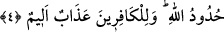

ya da kadın başka bir erkekle evlenip boşandıktan sonra bu erkek tekrar bu kadınla
evlenecek olursa yapmış olduğu zıharın keffâretini ödemedikçe onunla cinsel ilişkide
bulunması haram olur.
Bu açıklamamdan sonra Ebû Hanife’ye göre zıhar keffâretini gerektiren dönüş bu
kadınla cinsel ilişkide bulunmağa azmetmesidir. Erkek bu işi yapmağa karar verdiğinde
keffâret ödemedikçe kendisine helâl olmaz. Zıhardan bir süre sonra ve kocası keffâret
vermeden önce kadın vefat ettiği takdirde erkekten keffâret düşer. Çünkü yapmağa karar
verdiği ilişkide bulunma imkânı kalmamıştır.
“Size öğütlenen” keffâret hükmü “budur.” Âyet-i kerîmede geçen öğüt anlamındaki
vaaz, korkutma ile karışık vazgeçirmek demektir. Mânâ şöyle olur: Ey müminler! Sözü
edilen ve yapmaktan yasaklandığınız çirkin iş budur. Bu gibi cezâ borçları, günahları
işlemekten vazgeçiren caydırıcı unsurlardır. Bu keffâretin zikredilmesinden maksad, bu
hükmün meşru kılınmasının esas amacının cezâyı gerektirecek kötülüğü işlemekten
uzaklaştırıp vaz geçirmek olduğunu belirtmektir. Yoksa büyük sevap olan köle âzâd
ederek sevap kazanmayı temin için değildir.
Özet olarak söylemek gerekirse, dünyadaki sorumlu tutma olayında zıhar yapan ve
yapmayanlar için fayda vardır. Zıhar yapanlar için keffâret verme ve durumunu
düzeltme; zıhar yapmayanlar için de ihtiyatlı davranmak ve keffâret gibi cezâlara mâruz
kalmaktan kaçınma gibi faydalar vardır.
Şair der ki:
Kuş, tuzakta başka bir kuşu görürse
Saçılmış tane tarafına gitmez.
Nitekim “Allah yaptıklarınızdan haberi olandır.” Zıhar suçu ile keffâretinden ve
benzeri az veya çok işlenen şeylerden haberi olandır. Yâni yaptıklarınızın içini ve dışını
bilen ve size ona göre karşılığını verendir. Öyle olunca sizin için meşru kılınan
hükümlere uyun ve sınırlarını ihlal etmeyin.
4. (Buna imkân) bulamayan kimse, hanımı ile temas etmeden önce ardarda iki ay
oruç tutar. Buna da gücü yetmeyen, altmış fakiri doyurur. Bu (hafifletme), Allah’a
ve Rasûlüne inanmanızdan dolayıdır. Bunlar Allah’ın hükümleridir. Kâfirler için acı
bir azab vardır.